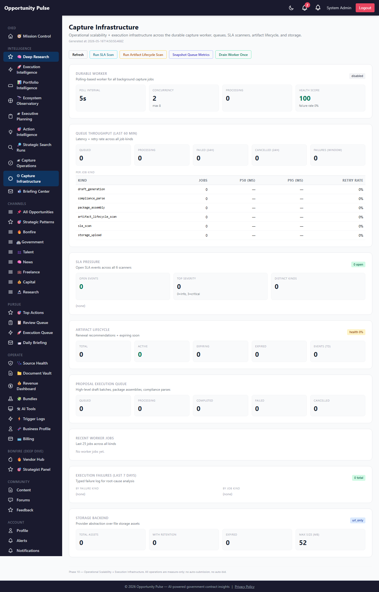
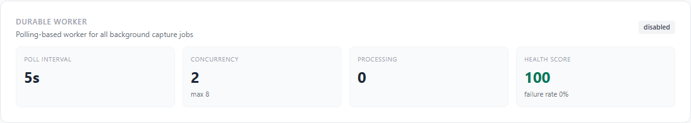
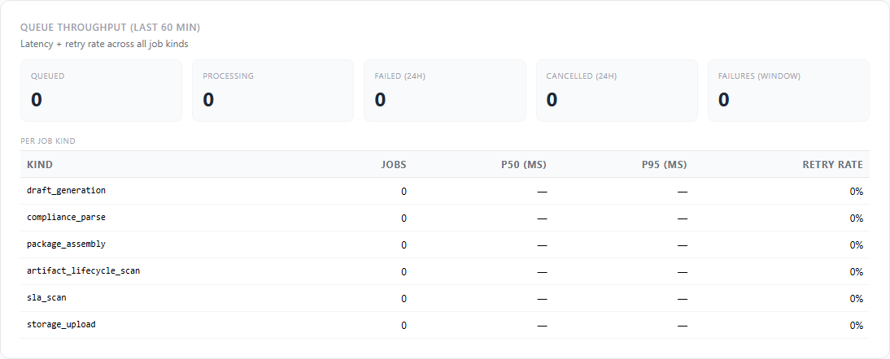
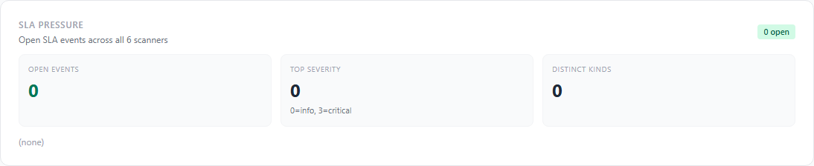
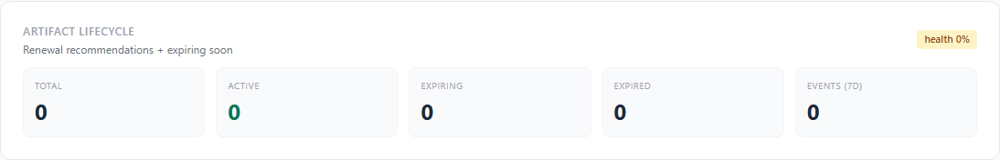
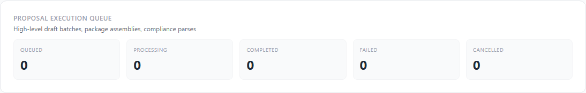
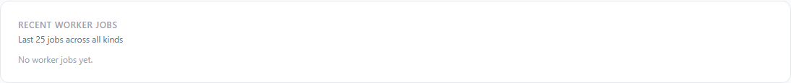
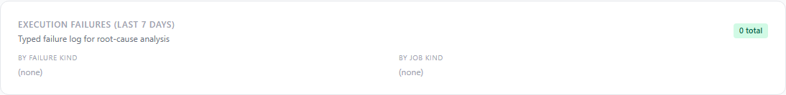
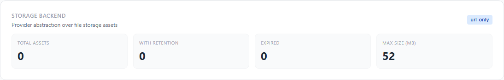

Deep Research Intelligence Engine — Phase 10
Phase 9 made the system know what was needed to submit a proposal. Phase 10 makes the system operate: durable workers, persistent queues, SLA pressure detection, artifact lifecycle, queue observability, file-storage abstraction, optional LLM augmentation, and a Capture Infrastructure dashboard that ties it all together. Every operation remains measure-only — no auto-submit, no auto-bid, no auto-sign.
10 features shipped 8 new tables 10 new services 27 new API routes 21 new unit tests Full suite 1982/1982 green
Why Phase 10
Phases 7–9 layered intelligence onto every pursuit: opportunity expansion, capture strategy, parallel draft generation, compliance matrix parsing, submission packages, gap detection, readiness scoring, and the Capture Operations dashboard. Each piece worked, but each piece was in the request lifecycle: when a user clicked "build compliance matrix" or "generate drafts," the API thread did the work, held the connection, and the user waited.
That model can’t survive enterprise scale — long jobs time out, retries are awkward, observability is per-request, partial failures leave silent gaps, SLA breaches go unnoticed, expiring artifacts go unnoticed, and there’s no single pane to see what the platform is actually doing across all pursuits in flight.
Phase 10 lifts every long-running operation out of the request lifecycle and
onto a durable worker queue backed by Postgres. Jobs are
resumable, retry-safe, observable, idempotent, cancelable. The new
Capture Infrastructure dashboard at
/admin/deep-research/capture-infra is the operator’s single window
onto worker health, queue throughput, SLA pressure, artifact lifecycle,
execution queue, recent failures, and storage status.
Governance contract preserved
Phase 10 is an infrastructure upgrade, not a policy change. Every guardrail from Phases 1–9 holds verbatim:
- No auto-submit — the system never
transmits a proposal to any portal. Drafts always land in the Review Queue with
status
draft; submission is human-only. - No auto-bid — pursuit decisions, pricing, and signatory authority remain human.
- No auto-sign — nothing is signed, certified, or transmitted on the operator’s behalf.
- Deterministic primary — the LLM second-pass for compliance matrix is feature-flagged OFF by default. The Phase 9 regex-based parser remains the source of truth.
- Measure-only — SLA scanners, artifact lifecycle, queue observability, and failure breakdowns surface state; they don’t mutate downstream artifacts.
- Audit-traceable — every worker job persists its full payload, attempt count, started/finished timestamps, and typed failure class to the database.
What shipped — the 10 features
| Feature | What it does | Surface |
|---|---|---|
| 1. Durable capture worker | Polling-based worker over the new worker_jobs table. Six job kinds
(draft generation, compliance parse, package assembly, artifact lifecycle scan,
SLA scan, storage upload). Bounded concurrency, exponential backoff with jitter,
typed failure classification, idempotent acquisition via optimistic UPDATE. |
captureWorker.service.js |
| 2. Proposal Execution Queue | High-level queue entries that fan out into multiple worker jobs (e.g. one draft batch = N draft_generation jobs). Status rollup, idempotent enqueue, cancellable. | proposalExecutionQueue.service.js |
| 3. SLA Intelligence | Six scanners detect SLA breaches: gap aging, pursuit stagnant, draft stalled, queue aging, readiness stagnant, blocker aging. Severity score scales with overshoot. Idempotent upsert keeps one open event per (kind, subject). | slaIntelligence.service.js |
| 4. Artifact Lifecycle Automation | Nightly scan flips proposal artifacts between active ↔ expiring ↔
expired. Renewal recommendations sorted by criticality. Append-only event log
on artifact_lifecycle_events. |
artifactLifecycle.service.js |
| 5. Queue Observability | Per-kind p50 / p95 latency, retry rate, success rate. Periodic snapshots
to queue_metrics. Worker health score combining failure rate and
backlog depth. |
queueObservability.service.js |
| 6. Storage abstraction | Provider-agnostic file-asset registry. Four backends declared: s3,
minio, local, url_only (default). MIME +
size validation. Signed URLs delegated to provider. |
storage.service.js |
| 7. Pursuit Context wiring | Threads the Phase 9 pursuit context block into actionGenerator at draft time. v1 stamps the block onto OpportunityOutput metadata for audit; full prompt prepend deferred to Phase 11. | pursuitContextWiring.service.js |
| 8. Durable Draft Generation | Replaces Phase 8’s in-process parallelDraftQueue with
worker-backed jobs. Resumable, retry-safe, idempotent. One worker_job per
linked opportunity. |
durableDraftGeneration.service.js |
| 9. LLM Compliance Augment | Strictly opt-in second-pass for thin compliance matrices.
Disabled by default via DEEP_RESEARCH_LLM_COMPLIANCE_ENABLED. The
deterministic Phase 9 parser remains primary; the LLM only fills gaps and tags
every item with metadata.source. |
complianceMatrixLlm.service.js |
| 10. Capture Infrastructure dashboard | Single-pane operator view that aggregates all the above: worker health, queue throughput, SLA pressure, artifact lifecycle, execution queue, recent jobs, failures, storage. Manual triggers for SLA scan, lifecycle scan, queue snapshot, worker drain. | captureInfra.service.js + CaptureInfraPage.jsx |
1. Durable capture worker
The worker is a polling loop driven by node-cron at
*/5 * * * * *. Each tick, it queries up to DEFAULT_CONCURRENCY
rows from worker_jobs with status='queued' and
run_after ≤ NOW(), atomically upgrading each to
status='processing' via an optimistic UPDATE…WHERE
that includes the previous status. That guarantees only one worker tick claims
a given job even if two workers run concurrently.
// Job kinds dispatched by loadHandler(): draft_generation → durableDraftGeneration.runDraftJob compliance_parse → complianceMatrix.buildForPursuit package_assembly → submissionPackage.assemblePackage artifact_lifecycle_scan → artifactLifecycle.runNightlyScan sla_scan → slaIntelligence.runFullScan storage_upload → (handler stub; Phase 11)
Each failure is classified into a typed bucket (timeout,
permanent, config, upstream,
transient), and the next retry is scheduled with exponential backoff
+ jitter (30s / 2m / 8m, capped at 10 min). Permanent failures don’t retry.
The worker is opt-in via the
DEEP_RESEARCH_WORKER_ENABLED=true env var — default OFF so prod
can flip it on intentionally after a smoke test.
2. Proposal Execution Queue
The execution queue (table proposal_execution_queue) is the
operator-facing grouping over worker_jobs. One queue entry maps to
one user intent (“build drafts for pursuit 7”), which fans out into
multiple worker_jobs (one per linked opportunity). Aggregate status, succeeded /
failed counts, and SLA-due timestamps live on the queue row; per-job detail
remains in worker_jobs. The split keeps the dashboard responsive without
scanning thousands of worker rows.
3. SLA Intelligence
Six scanners run via a single runFullScan() entry point:
| Scanner | What ages it | Default threshold (days) | Env override |
|---|---|---|---|
| gap_aging | Open compliance gap | 7 | DEEP_RESEARCH_SLA_GAP_DAYS |
| pursuit_stagnant | No pursuit activity | 14 | DEEP_RESEARCH_SLA_PURSUIT_DAYS |
| draft_stalled | Draft job stuck processing | 3 | DEEP_RESEARCH_SLA_DRAFT_DAYS |
| queue_aging | Worker job stuck queued | 2 | DEEP_RESEARCH_SLA_QUEUE_DAYS |
| readiness_stagnant | Readiness score not refreshed | 10 | DEEP_RESEARCH_SLA_READINESS_DAYS |
| blocker_aging | Timeline event blocked | 5 | DEEP_RESEARCH_SLA_BLOCKER_DAYS |
Each scanner upserts into sla_events: one open event per
(slaKind, scopeKind, scopeId). Severity = 40 + (ageDays − threshold) × 6,
clamped to [40, 100]. Escalation copy is generated per kind.
4. Artifact Lifecycle Automation
Proposal artifacts (capability statements, COIs, past performance write-ups,
diversity certifications, etc.) have an expires_at column from
Phase 9. Phase 10 wires that into a scanner: artifacts within
EXPIRING_WINDOW_DAYS (default 30) flip to expiring;
past expires_at flips to expired. Every state
transition is recorded in artifact_lifecycle_events for auditable
history. Renewal recommendations sort by criticality + days-until-expiry.
5. Queue Observability
For each job kind in the last 60 minutes (configurable), the observability
service computes job count, p50 / p95 latency in milliseconds, retry rate
(avg attempts > 1 / total), and failures-by-class. Periodic snapshots can be
appended to queue_metrics for trend analysis. Worker health is a
composite 0–100 score combining recent failure rate and backlog depth.
6. Storage abstraction
The storage_assets registry stores a row per file (provider,
bucket, key, MIME, size, retention, expiry). Four declared backends:
- s3 — AWS S3 via aws-sdk (provider stub; full wiring in Phase 11).
- minio — self-hosted S3-compatible (provider stub).
- local — disk-backed for dev/staging (provider stub).
- url_only — v1 default: metadata-only; the file lives at an
externally-hosted URL recorded in
content_ref. Lets the platform deploy and start tracking artifacts without any S3 credentials.
MIME allowlist + max-size are enforced before any provider call.
7. Pursuit Context wiring
The Phase 9 pursuitContextInjector composes a context block
summarizing pursuit + capture strategy + linked opportunities + suggested
assets + readiness blockers. Phase 10 wires that block into the OIED
actionGenerator draft pipeline. v1 stamps the composed block onto
the OpportunityOutput’s metadata.pursuit_context_block so the
draft is auditably linked to the pursuit context it was generated under. Full
prompt-prepend integration is queued for Phase 11.
8. Durable Draft Generation
Replaces Phase 8’s in-process parallelDraftQueue.service.
Each linked opportunity in a pursuit becomes one worker_jobs
row with job_kind='draft_generation'. The worker picks them up
with bounded concurrency. Drafts always land in the Review Queue at
status='draft'; human review + human submit still required.
Idempotent — a pursuit can be re-enqueued and any opportunity that already
has a completed draft job is skipped.
9. LLM Compliance Augment (opt-in)
When a deterministic compliance matrix has fewer than
LOW_CONFIDENCE_THRESHOLD (default 6) items, an operator can opt
the matrix into an LLM second-pass. The LLM is constrained by a strict system
prompt to return only structured JSON
({ item_kind, label, requirement_text, severity }),
capped at 25 items, and explicitly told not to invent items or
duplicate the deterministic-already-found ones (capability statement, past
perf, NAICS, deadlines, etc.). New items are merged with
metadata.source='llm_phase10' for full audit.
Feature-flag protected. Enabled only when
DEEP_RESEARCH_LLM_COMPLIANCE_ENABLED=true. Off by default in prod.
10. Capture Infrastructure dashboard
Single page that aggregates worker health, queue throughput, SLA pressure, artifact lifecycle, execution queue, recent worker jobs, failures, and storage. Manual operator triggers: Refresh, Run SLA Scan, Run Artifact Lifecycle Scan, Snapshot Queue Metrics, Drain Worker Once. Read-only for all aggregated state.
Screens
Capture Infrastructure dashboard — full page

Operator action bar
Durable Worker section

disabled in prod today (flag off). Health score 100, no failures.Queue Throughput section

SLA Pressure section

Artifact Lifecycle section

Proposal Execution Queue section

Recent Worker Jobs section

Execution Failures section

Storage Backend section

url_only provider in production today; zero registered assets.Database schema (Phase 10)
| Table | Purpose |
|---|---|
worker_jobs | The durable job queue. Per-row: job_kind, status, priority, payload, result, attempt/max_attempts, run_after, batch_id, started_at, finished_at. |
proposal_execution_queue | High-level queue entries. One row per operator intent; fans out into N worker_jobs via batch_id. |
artifact_lifecycle_events | Append-only log of every lifecycle transition (created / used / expiring / expired / renewed / archived). |
sla_events | Open + acknowledged + resolved SLA breach events. One open per (kind, subject) via idempotent upsert. |
queue_metrics | Periodic throughput snapshots for trend analysis. |
storage_assets | File registry (provider, bucket, key, mime, size, retention, expires_at). |
execution_failures | Typed failure log with failure_kind + will_retry + next_retry_at. |
operational_metrics | Per-pursuit composite metrics (throughput, completion, SLA score). |
Single migration: 20260516000002-deep-research-phase-10.js. Applied
to prod in 443ms.
API routes (Phase 10)
All mounted under /api/v1/deep-research, all admin-only.
GET /capture-infra — dashboard composite GET /worker-jobs — list jobs (filter by kind/status/pursuit) GET /worker-jobs/:id — one job detail POST /worker-jobs/:id/cancel — cancel job POST /worker-jobs/drain — one drain pass (operator) POST /pursuits/:id/execution-queue/draft-batch — fan-out draft batch POST /pursuits/:id/execution-queue/single — single execution job GET /execution-queue — list entries GET /execution-queue/:id — entry detail POST /execution-queue/:id/refresh — recompute status from jobs POST /execution-queue/:id/cancel — cancel entry + descendant jobs POST /sla/scan — run all 6 SLA scanners GET /sla/events — list events PATCH /sla/events/:id — ack / resolve / dismiss POST /artifact-lifecycle/scan — nightly scan (manual trigger) GET /artifact-lifecycle/renewals — ranked renewal recommendations GET /artifact-lifecycle/:id/events — lifecycle event history for one artifact GET /queue-observability — rolling p50/p95/retry/success POST /queue-observability/snapshot — append snapshot to queue_metrics GET /queue-observability/snapshots — recent snapshots POST /storage-assets — register a new asset GET /storage-assets — list GET /storage-assets/:id/signed-url — signed download URL (provider-delegated) DELETE /storage-assets/:id — deregister + delete POST /pursuits/:id/durable-drafts — enqueue durable drafts (worker-backed) GET /pursuits/:id/durable-drafts — list draft worker jobs for pursuit GET /pursuits/:id/context-block/preview — preview pursuit context block POST /pursuits/:id/compliance-matrix/llm-augment — opt-in LLM second-pass (feature-flagged)
Files changed
- Backend — new (21):
backend/src/deepResearch/captureWorker.service.jsbackend/src/deepResearch/proposalExecutionQueue.service.jsbackend/src/deepResearch/slaIntelligence.service.jsbackend/src/deepResearch/artifactLifecycle.service.jsbackend/src/deepResearch/queueObservability.service.jsbackend/src/deepResearch/storage.service.jsbackend/src/deepResearch/pursuitContextWiring.service.jsbackend/src/deepResearch/durableDraftGeneration.service.jsbackend/src/deepResearch/complianceMatrixLlm.service.jsbackend/src/deepResearch/captureInfra.service.jsbackend/src/migrations/20260516000002-deep-research-phase-10.jsbackend/src/models/WorkerJob.js+ 7 other model filesbackend/tests/deepResearch/phase10.test.js(21 unit tests)backend/scripts/capture-deep-research-phase-10-walkthrough.js- Backend — modified:
backend/src/deepResearch/deepResearch.controller.js— +28 handlersbackend/src/deepResearch/deepResearch.routes.js— +27 routesbackend/src/models/index.js— +8 modelsbackend/src/server.js—captureWorker.startScheduler()- Frontend — new (1):
frontend/src/pages/CaptureInfraPage.jsx- Frontend — modified:
frontend/src/services/deepResearchService.js— +27 client methodsfrontend/src/App.jsx— route + importfrontend/src/components/common/Sidebar.jsx— nav link- Docs:
docs/deep-research-phase-10-walkthrough.html(this file)docs/deep-research-assets/p10-*.png(10 screenshots)
Validation
- Unit tests: 21 new Phase 10 tests, all passing. Coverage: captureWorker (classifyFailureKind, backoffMs, newBatchId, VALID_JOB_KINDS); storage (activeProvider, VALID_PROVIDERS, isMimeAllowed); slaIntelligence (severityForAge, escalationFor, VALID_KINDS, THRESHOLDS); artifactLifecycle (VALID_EVENT_KINDS, EXPIRING_WINDOW_DAYS); queueObservability (median, p95, VALID_KINDS); complianceMatrixLlm (FEATURE_FLAG_ENV, isEnabled, sanitizeLlmItems edge cases); proposalExecutionQueue (VALID_KINDS, VALID_STATUSES); durableDraftGeneration (SUPPORTED_TYPES).
- Full suite: 182 suites, 1982 tests, all green (Phase 9 baseline was 1961). +21 net.
- Migration: Applied to prod in 443ms; all 8 new tables verified
in
information_schema. - Smoke test: Backend health endpoint returns 200;
/api/v1/deep-research/capture-infrareturns 401 unauthorized (admin-gated) confirming route is wired; live page renders end-to-end including all 8 dashboard sections. - Dashboard: Capture Infrastructure page renders all 8 sections cleanly on prod (10/10 section screenshots captured).
Known limitations — deferred to Phase 11
- Storage providers beyond
url_onlyare stubs. S3 / MinIO / local-disk wiring is queued for Phase 11. Asset registration works today viacontent_refURLs. - Pursuit context block prompt integration: currently stamped onto OpportunityOutput metadata (audit-only). Phase 11 will pre-pend the block into actionGenerator’s user-prompt builder so it actually shapes the LLM output.
- SLA email escalation: open events are surfaced on the dashboard but not yet emailed. Phase 11 will integrate with the daily Source Health Agent email plumbing.
- Worker scheduler is opt-in via env flag. Prod has the worker
disabled by default until smoke-validated. Flip
DEEP_RESEARCH_WORKER_ENABLED=trueon the prod env to activate. - LLM compliance augment is opt-in via env flag. Deterministic Phase 9 parser remains the primary source of truth.
- Real-time UI updates: the dashboard is poll-on-refresh; no WebSocket / SSE push yet.
Recommended Phase 11
Title: Multi-Tenant Submission Operations + Auditability Hardening.
Phase 10 turned the platform into an enterprise-capable execution substrate. Phase 11 should harden it for multi-tenant submission workflows + cross-pursuit auditability:
- S3 / MinIO storage provider wiring — replace the
url_onlydefault with a real backed store. Migrate the existing proposal artifacts and submission packages into it. - Pursuit-context prompt integration in
actionGenerator.buildGroundedUserPrompt()— the context block becomes a real input to the LLM, not just metadata. - SLA email escalation via the daily Source Health Agent pipeline — open events digest, ack tracking, reassignment workflow.
- Multi-tenant scoping on every Phase 9/10 surface (organization_id everywhere; row-level filtering at the model layer).
- Submission audit trail — one append-only log of every operator action on every pursuit, queryable by user / pursuit / date range.
- Capture Infrastructure trend charts — turn the periodic
queue_metricssnapshots into sparklines on the dashboard. - Compliance Matrix LLM augment UI — one-click button on the Pursuit Workspace page (currently API-only).
- WebSocket / SSE push for the dashboard so operator sees state changes live without refresh.